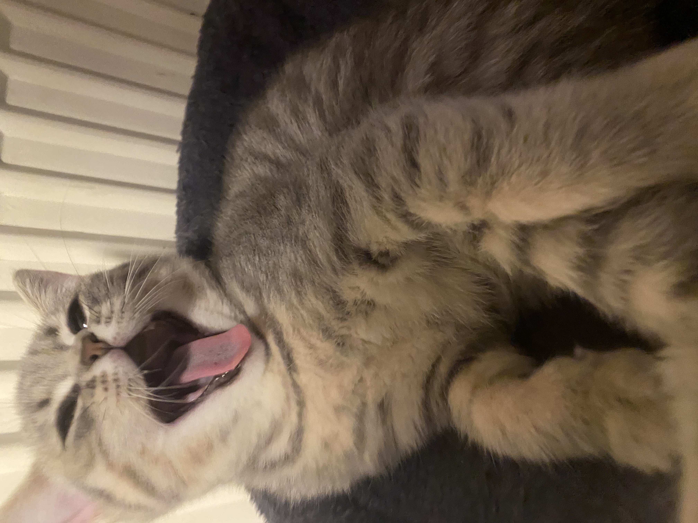
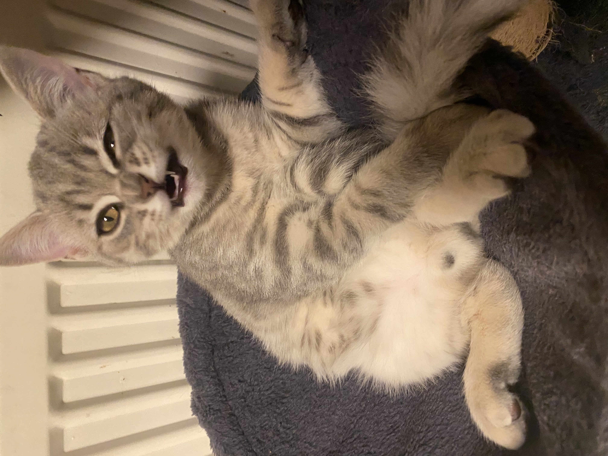
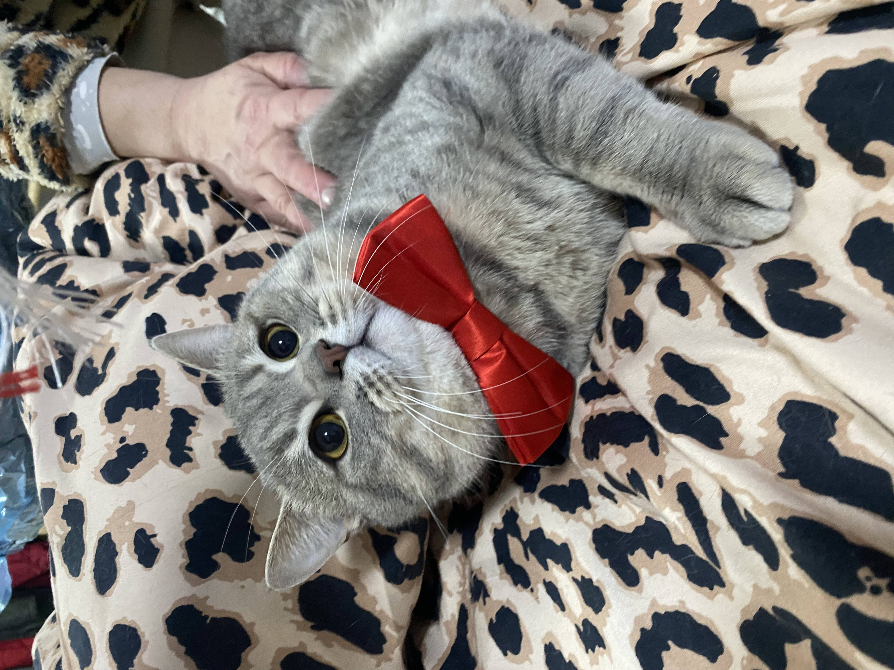

Povestea lui Hasoon

Umbra Iubitoare 🐾
Hasoon este definiția motanului "Velcro". Este extrem de iubitor și nu concepe ideea de spațiu personal. Dacă ești acasă, Hasoon este lângă tine.
Personalitate
Misiunea lui în viață este să te urmărească. Mergi la bucătărie? Hasoon e acolo. Mergi la baie? Hasoon te așteaptă la ușă. Te așezi la birou? El se așează pe tastatură. Este incredibil de afectuos și caută constant atenție, mângâieri și contact fizic.
Este un companion desăvârșit. Deși e iubitor cu toată lumea, își alege o persoană preferată pe care o idolatrizează și o urmează absolut peste tot.
Obiceiuri Amuzante
- Te așteaptă la ușă în fiecare zi când te întorci acasă.
- Dacă stai pe laptop, va încerca să se bage între tine și ecran.
- Doarme pe hainele tale lăsate pe scaun, pentru a fi "aproape" de tine.
Mai multe poze cu Hasoon



